3．斯图姆-刘维尔理论
牵涉到数学物理中偏微分方程的问题，通常包含一些边界条件，如像振动的弦必须在端点固定这样的条件。当分离变量法应用于偏微分方程时，这方程就分解为两个或多个常微分方程，而加在所求解上的边界条件就变成一个常微分方程的边界条件。一般说来这常微分方程包含一个参数，事实上它是从变量分离的过程中得来的，而给参数赋以特殊值，通常可得到方程的解。这些值叫特征值或本征值，而相应于任一特征值的解叫特征函数。此外，为了适合起先的条件或原问题的条件，必须把给定的函数f（x）用特征函数表示出来（例如看第28章的［11］）。
确定带边界条件的一个常微分方程的特征值和特征函数的问题，以及把给定的函数展为特征函数的无穷级数的问题（大约起自1750年），随着新坐标系的引入和新的函数类像贝塞尔函数、勒让德多项式、拉梅函数、马蒂厄函数等作为常微分方程的特征函数而兴起，就变得更为突出了。巴黎大学理学院力学教授斯图姆（1803—1855）和斯图姆的朋友、法兰西学院的数学教授刘维尔（1809—1882），这两人决定着手钻研任何二阶常微分方程的一般问题。斯图姆从1833年起就已经从事研究偏微分方程的问题。最初是从事变密度棒中热流问题的研究，所以他是完全知道特征值和特征函数的问题的。
他应用于这个问题上的数学思想(19)是与他对代数方程的根的实性和分布的研究密切联系着的。他说，他关于微分方程的思想是从差分方程的研究并过渡到极限而得来的。
斯图姆告诉刘维尔他正在研究的问题后，刘维尔也研究起同一课题来了(20)。这两人的几篇论文中的结果是十分详尽的，可用近代的记号最方便地概述如下：他们考虑一般的二阶方程
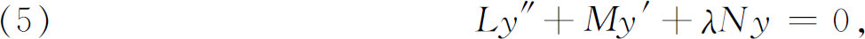
其中L，M，N是x的连续函数，L不为零，λ是参数。遍乘以
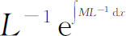
后，方程可以改成
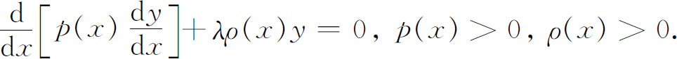
原方程和变换后的方程所应满足的边界条件可以有一般形式
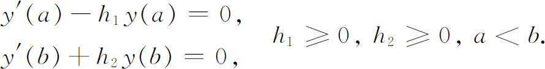
斯图姆和刘维尔证明了下列基本结果：
（a）仅当λ取递增到∞的正数序列λn的任一值时，这问题才有非零解。
（b）对每一λn，解是一函数vn的倍数，而vn可以用条件
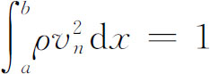
加以规范化。（c）成立正交性质
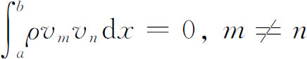
。（d）每个在区间（a，b）上二次可微的、满足边界条件的函数f可以展为一致收敛的级数
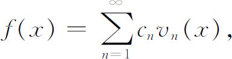
其中
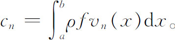
（e）等式
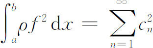
普遍成立。这最后的等式叫做帕塞瓦尔等式。已由帕塞瓦尔（Marc-Antoine Parseval，？—1836）在1799年(21)纯形式地对三角函数集证明过了。随之而来的是贝塞尔在1828年证明的(22)（还是关于三角级数的）不等式，即
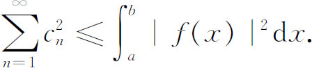
实在说，斯图姆-刘维尔的结果并不是在所有方面都令人满意的。f（x）可以表示为特征函数的无穷和的证明是不充分的。一个困难是关于特征函数集的完全性的事实，对（a，b）上的连续函数f（x），这就是上面的条件（e），粗糙地看，这意味着特征函数集大得足以表示“任何”函数f（x）。另外，虽然刘维尔用柯西和狄利克雷发展的理论确实给出了某种情形下
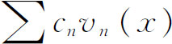
收敛到f（x）的证明，但是级数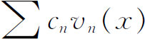
是在何种意义下收敛到f（x）的问题，是逐点收敛、一致收敛还是在某种更一般意义下的收敛，还没有包括进去。